数据结构核心考点¶
1. 常见的逻辑结构¶
- 线性结构：一般线性表、受限线性表（栈和队列）、线性表推广（数组）
- 非线性结构：集合结构、树结构、图结构
2.常见的存储结构¶
| 存储结构 | 定义 | 优点 | 缺点 |
|---|---|---|---|
| 顺序存储 | 把逻辑上相邻的元素存储在物理位置上也相邻的存储单元中，元素之间的关系由存储单元的邻接关系来体现 | 随机存取，占用空间少 | 使用一整块相邻的存储单元，产生较多碎片 |
| 链式存储 | 不要求逻辑上相邻的元素在物理位置上也相邻，借助指示元素存储地址的指针来表示元素之间的逻辑关系 | 不会出现碎片，充分利用所有存储单元 | 需要额外空间，只能顺序存取 |
| 索引存储 | 在存储元素信息的同时，还建立附加的索引表。 | 检索速度快 | 附加的索引表需要额外空间。增删数据修改索引表时花费时间 |
| 散列存储 | 根据元素的关键字直接计算出该元素的存储地址，又称哈希(Hash)存储。 | 检索、增加和删除结点的操作很快 | 可能出现元素存储单元的冲突，解决冲突会增加时间和空间开销 |
3. 算法复杂度分析步¶
- 确定表示输入规模的参数
- 找出算法的基本操作
- 检查基本操作的执行次数是否只依赖于输入规模。这决定是否需要考虑最差、平均以及最优情况下的复杂性
- 对于非递归算法，建立算法基本操作执行次数的求和表达式；
- 对于递归算法，建立算法基本操作执行次数的递推关系及其初始条件，利用求和公式和法则建立一个操作次数的闭合公式，或者求解递推公式，确定增长的阶
加法法则：
乘法法则：
常见的复杂度：
两类递归算法问题的复杂度求解：
- 线性分解
- 指数分解
4. 线性表的顺序实现要点¶
- 随机访问
- 存储密度高
- 插入删除需要移动大量元素
注意算法对i的描述是第i个元素，它是以1为起点的
| 操作 | 最好时间复杂度 | 最坏时间复杂度 | 平均情况 |
|---|---|---|---|
| 插入 | 插到表尾，O(1) | 插到表头，O(n) | 平均概率 O(n) |
| 删除 | 删除表尾，O(1) | 删除表头，O(n) | 平均概率 O(n) |
| 按值查找 | 目标在表头，=O(1) | 目标在表尾，O(n) | 平均概率O(n) |
| 按位置访问 | O(1) | O(1) | 平均概率O(1) |
5. 线性表的单链表形式¶
- 结点描述：
typedef struct LNode{ //定义单链表结点类型
ElemType data; //数据域
struct LNode *next; //指针域
}LNode, *LinkList; //LinkList为指向结构体LNODE的指针类型
- 通常用头指针来标示一个单链表。
- 有头结点或者没头结点之分
- 头结点的作用
- 便于首元结点的处理，对链表的第一个数据元素的操作与其他数据元素相同，无需特殊处理
- 便于空表与非空表的统一处理：头指针永远不为空
单链表的头插法及尾插法¶
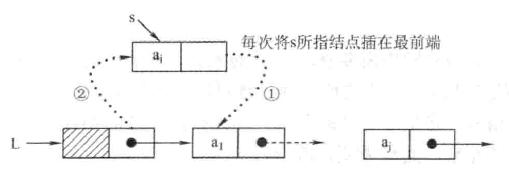
LinkList List_HeadInsert(LinkList &L){
LNode *s;int x;
L=(LinkList)malloc(sizeof(LNode));//创建头结点
L->next = NULL; //初始为空链表
scanf("%d",&x);
while(x!=9999){
s = (LNode*)malloc(sizeof(LNode));
s->data = x;
s->next = L->next;
L->next = s;
scanf("%d",&x);
}
return L;
}

LinkList List_TailInsert(LinkList &L){
int x;
L = (LinkList)malloc(sizeof(LNode));
LNode *s,*r=L; //r为表尾指针
scanf("%d",&x);
while(x!=9999){
s = (LNode *)malloc(sizeof(LNode));
s->data = x;
r->next = s;
r = s;
scanf("%d",&x);
}
r->next = NULL; //尾结点指针置空
return L;
}
按位序删除¶
//删除操作:将单链表中的第i个结点删除
bool Delete(LinkList &L, int i int &e){
if(i<1 || i>Length(L))
return false;
LNode *p = GetElem(L,i-1); //查找第i个位置
LNode *q = p->next;
e = q->data;
p->next = q->next;
free(q);
return true;
}
指定结点的删除¶
时间复杂度=O(n)
方法：p的后一个为q，p指向q的下一个，把q的值给p，最后释放q
//删除指定结点p
bool Delete(LNode *p){
if(p==NULL) return false;
LNode *q = p->next;
p->data = q->data
p->next = q->next;
free(q);
return true;
}
6. 双链表的结构，其操作类似单链表，注意别漏掉相关的指针设置¶
7. 循环链表初始条件及判空条件的变化¶
- 循环单链表
初始化和判空(与单链表不一样)
L->next = NULL改为L->next = L
- 循环双链表
初始化和判空(与双链表不一样)
8. 静态链表¶
借助数组来描述线性表的链式存储结构，结点也有数据域data和指针域next，这里的指针是节点的相对地址（数组下标），又称游标

9. N个不同元素进栈出栈，出栈的序列个数为：\(\frac {1} {n-1}C^{n}_{2n}=\frac{1}{n-1} \frac{(2n)!}{n! \times n!}\)¶
10 顺序栈的实现，关键标识的设置¶
利用一组地址连续的存储单元存放自栈底到栈顶的数据元素，并附设一个指针top指示当前栈顶元素的位置
- 栈顶指针：
S.top，初始时设置S.top=-1；栈顶元素：S.data[S.top] - 进栈操作：栈不满时，栈顶指针先加 1，再送值到栈顶元素
- 出栈操作：栈非空时，先取栈顶元素值，再将栈顶指针减 1
- 栈空条件：
S.top==-1；栈满条件：S.top==MaxSize-1；栈长：S.top+1
11. 共享栈的改进¶
利用栈底位置相对不变的特性，可让两个顺序栈共享一个一维数组空间，将两个栈的栈底分别设置在共享空间的两端，两个栈顶共享空间的中间延伸。
-
两个栈的栈顶指针都指向栈顶元素
-
top0=-1时 0 号栈为空，top1=MaxSize时1号栈为空 -
top1-top0==1为栈满 -
当
0号栈进栈时top0先加 1 再赋值，1号栈进栈时top1先减 1 再赋值；出栈是刚好相反
12. 栈的链式存储结构， 一般为了方便，没有头节点¶
采用链式存储的栈称为链栈，链栈的优点是便于多个栈共享存储空间和提高其效率，且不存在栈满上溢的情况。这里规定链栈没有头结点，Lhead指向栈顶元素
13. 队列的顺序存储及问题¶
队列的顺序实现是指分配一块连续的存储单元存放队列中的元素，并附设两个指针：队头指针front指向队头元素，队尾指针rear指向队尾元素的下一个位置
#define MaxSize 50//定义队列中元素的最大个数
typedef struct{
ElemType data[MaxSize];//存放队列元素
int front,rear;//队头指针和队尾指针
} SqQueue;
- 初始状态：
Q.front==Q.rear==0 - 进队操作：队不满时，先送值到队尾元素，再将队尾指针加 1
- 出队操作：队不空时，先取队头元素值，再将队头指针加 1
14. 队列的顺序存储的改进，循环队列的相关操作步骤及指针的设置¶
将顺序队列臆造为一个环状的空间，即把存储队列元素的表从逻辑上视为一个环，称为循环队列。当队首指针Q.front=MaxSize-1后，再前进一个位置就自动到 0，这可以利用除法取余运算%来实现
- 初始状态：
Q.front=Q.rear=0 - 队首指针进 1：
Q.front=(Q.front+1)%MaxSize - 队尾指针进 1：
Q.rear=(Q.rear+1)%MaxSize - 队列长度：
(Q.rear+MaxSize-Q.front)%MaxSize - 出队入队时：指针都按顺时针方向进 1
判断循环队列队空或队满的三种方式
-
牺牲一个单元来区分队空和队满，入队时少用一个队列单元，约定以 “队头指针在队尾指针的下一位置作为队满的标志”
- 队满条件：
(Q.rear+1)%MaxSize==Q.front - 队空条件：
Q.front=Q.rear - 队列中元素的个数：
(Q.rear-Q.front+MaxSize)%MaxSize
- 队满条件：
-
类型中增设表示元素个数的数据成员。
- 队空条件：
Q.size==0 - 队满条件：
Q.size==MaxSize
- 队空条件：
-
类型中增设
tag数据成员，以区分是队满还是队空。tag=0时，若因删除导致Q.front==Q.rear, 则为队空tag=1时，若因插入导致Q.front==Q.rear, 则为队满
15. 队列的链式存储结构，通常带有头结点¶
队列的链式表示称为链队列，它实际是一个同时带有队头指针和队尾指针的单链表。头指针指向队头结点，尾指针指向队尾结点。
typedef struct{//链式队列结点
ElemType data;
struct LinkNdoe *next;
}LinkNode;
typedef struct{//链式队列
LinkNode *front,*rear;//队列的队头和队尾指针
}LinkQueue;
通常将链式队列设计成一个带头结点对的单链表，这样插入和删除就统一了
16. 双端队列¶
双端队列是指允许两端都可进行入队和出队操作的队列，其元素的逻辑结构仍是线性结构。将队列的两端分别称为前端和后端。
- 输出受限的双端队列：允许在一端进行插入和删除，另一端只允许插入的双端队列
- 输入受限的双端队列：允许在一端进行插入和删除，另一端只允许删除的双端队列
17. 栈在括号匹配中的应用¶
- 初始设置一个空栈，顺序读入括号
- 若是右括号，则或者置于栈顶的最急迫期待得以消解，或者是不合法的情况
- 若是左括号，则作为一个新的更急迫的期待压入栈中
- 算法结束时，栈为空，否则括号序列不匹配
18. 后续表达式计算方式¶
顺序扫描表达式的每一项，然后根据它的类型作出如下相应操作：若该项是操作数，则将其压入栈中；若该项是操作符<op>，则连续从栈中退出两个操作数Y和X，形成运算指令X<op>Y，并将计算结果重新压入栈中。当表达式的所有项扫描并处理完毕后，栈顶存放的就是最后的结果
19. 中缀表达式转换为后缀表达式¶
手工做法¶
- 按照运算符的优先级对所有的运算单位加括号
- 转换为前缀或后缀表达式。前缀把运算符移动到对应的括号前面，后缀把运算符移动到对应的括号后面
- 把括号去掉
算法思路¶
- 从左向右开始扫描中缀表达式
- 遇到数字时，加入后缀表达式
- 遇到运算符时
- 若为
(, 入栈 - 若为
)，则依次把栈中的运算符加入后缀表达式，直到出现(, 从栈中删除( - 若为除括号外的其他运算符，当其优先级高于除
(外的栈顶运算符时，直接入栈。否则从栈顶开始，依次弹出比当前处理的运算符优先级高和优先级相等的运算符，直到一个比它优先级低的或遇到一个左括号为止。

20. 队列在层次遍历中的应用¶
- 根节点入队
- 若队空，则结束遍历；否则重复
3操作 - 队列中第一个结点出队，并访问之。若其没有左孩子，则将左孩子入队，若其有左孩子，则将其右孩子入队，返回
2
21. 广义的存储结构及获取表头表尾操作的组合¶
最后一个是一个无限深度的广义表\(B = (a, B)\)
已知广义表 \(L = (a, (b, c), (d, e))\)使用取头函数 GetHead 和取尾函数 GetTail 求出原子 e
e = GetHead(GetTail(GetHead(GetTail(GetTail(L))))
22. KMP 模式匹配¶
基础概念¶
- 前缀：除最后一个字符以外，字符串的所有头部子串
- 后缀：除第一个字符外，字符串的所有尾部子串
- 部分匹配值
PM：字符串的前缀和后缀的最长相等前后缀长度
算法原理¶
| 编号 | 描述 | 1 | 2 | 3 | 4 | 5 |
|---|---|---|---|---|---|---|
S |
字符 | a | b | c | a | c |
PM |
子串右移位数=已匹配的字符数-对应的部分匹配值：Move=(j-1)-PM[j-1] |
0 | 0 | 0 | 1 | 0 |
next（PM右移一位） |
子串右移位数：Move=(j-1)-next[j]，子串的比较指针回退到：j=next[j]+1 |
-1 | 0 | 0 | 0 | 1 |
next=next+1 |
在子串的第j个字符与主串发生失配时，则跳到子串的next[j]位置重新与主串当前位置进行比较 |
0 | 1 | 1 | 1 | 2 |

KMP 算法的进一步优化¶
nextval[], 如果出现了 \(p_j=p_{next[j]}\), 则将next[j]修正为next[ next[j] ], 直到两者不相等

23. 树的常用性质¶
- 树中的节点数等于所有结点的度数之和加 1
- 总结点数 = \(n_0+n_1+n_2+...+n_m\)
- 总分支数 = \(1n_1+2n_2+...+mn_m\)
- 总结点数 = 总分支数 + 1
24. 二叉树的主要特性¶
- 满二叉树：一棵高度为 h，且含有 2 h − 1 2^h-1 2h−1 个结点的二叉树称为满二叉树，除叶子结点外每个结点度数为 2
-
完全二叉树：每个结点都与同等高度的满二叉树有同样的编号
- 若 \(i\leq \lfloor n/2 \rfloor\), 则结点
i为分支结点，否则为叶子结点 - 当 \(2i\leq n\) 时，结点
i的左孩子编号为 \(2i\), 否则无左孩子 - 当 \(2i+1\leq n\)时，结点
i的右孩子编号为 \(2i+1\), 否则无右孩子 - 结点
i所在的层次为 \(\lfloor log_2i \rfloor\) - 叶子结点只可能在层次最大的两层上出现，对于最大层次中的叶子结点，都依次排列在该层最左边的位置上
- 若有度为 1 的节点，则只可能有一个，且只有左孩子没有右孩子
- 若 n 为奇数，则每个分支结点都有左孩子和右孩子；若 n 为偶数，则编号最大的分支结点只有左孩子，没有右孩子
- 若 \(i\leq \lfloor n/2 \rfloor\), 则结点
-
非空二叉树上的叶子结点数等于度为 2 的结点数 + 1，即 \(n_0=n_2+1\)
25. 二叉树的遍历¶
二叉树的遍历是按照某条搜索路径访问树中每个结点，使得每个结点均被访问一次，而且仅被访问一次。共有先序遍历（NLR）、中序（LNR）、后序（LRN）三中遍历方法
递归遍历算法¶
void PreOrder(BiTree T){//PreOrder-先序、InOrder-中序、PostOrder-后序
if(T!=NULL){
visit(T);//访问根结点
PreOrder(T->lchild);//遍历访问左子树
PreOrder(T->rchlid);//遍历访问右子树
}
}
非递归遍历算法¶
- 先序遍历
void PreOrder2(BiTree T){
InitStack(S);BiTree p=T;
while(p||!IsEmpty(S)){
if(p){
visit(p);Push(S,p);
p = p->lchild;
}
else{
Pop(S,p);
p = p->rchild;
}
}
}
- 中序遍历
void Inorder2(BiTree T){
InitStack(S);BiTree p = T;//初始化S，p是遍历指针
while(p||!IsEmpty(S)){
if(p){//一路向左
Push(S,p);//当前结点入栈
p = p->lchild;//左孩子不空，一直往左走
}
else{//出栈，并转向出栈结点的左子树
Pop(S,p);visit(p);//栈顶元素出栈，访问出栈结点
p = p->rchild;//向右子树走
}
}
}
- 后序遍历
void PostOrder(BiTree T){
InitStack(S);
P = T;
r = NULL;
while(p||!IsEmpty(S)){
if(p){ //走到最左边
push(S,p);
p = p->lchild;
}
else{ //向右
GetTop(S,p); //读栈顶结点（非出栈）
if(p->rchild&&r->rchild!=r) //若右子树存在，且未被访问过
p = p->rchild; //转向右
else{ //否则，弹出结点并访问
pop(S,p); //将结点弹出
visit(p->data); //访问该结点
r = p; //记录最近访问过的结点
p = NULL; //结点访问完，重置p指针
}
}//else
}//while
}
- 层次遍历
void LevelOrder(BiTree T){
InitQueue(Q);
BiTree p;
EnQueue(Q,T);//将根结点入队
while(!IsEmpty(Q)){
DeQueue(Q,p);
visit(p);
if(p->lchild!=NULL)EnQueue(Q,p->lchild);
if(p->rchild!=NULL)EnQueue(Q,p->rchild);
}
}
26. 由遍历序列构造二叉树¶
由二叉树中序遍历结果和前序、后序、层次中的一个组合，就可唯一确定一棵二叉树

27. 线索二叉树的基本结构及线索化¶
在含n个结点的二叉树中，有n+1个空指针。引入线索二叉树正是为了加快查找结点前驱和后继的速度。
规定：若无左子树，令lchild指向其前驱结点；若无右子树，令rchild指向其后继结点
lchild |
ltag |
data |
rtag |
rchild |
|---|---|---|---|---|
\(ltag= \begin{cases} 0,&lchild域指示结点的左孩子\\ 1，&lchild域指示结点的前驱 \end{cases}\)
\(rtag=\begin{cases} 0,&rchild域指示结点的右孩子\\ 1，&rchild域指示结点的后继 \end{cases}\)
typedef struct ThreadNode{
ElemType data;
struct ThreadNode *lchild,*rchild;
int ltag,rtag;
}ThreadNode,*ThreadTree;
中序线索二叉树的构造¶
线索化的实质就是遍历一次二叉树
中序线索二叉树的遍历¶
在对其进行遍历时，只要先找到序列中的第一个节点，然后依次找结点的后继，直至后继为空。在中序线索二叉树中找结点后继的规律是：若其右标志为 “1”，则右链为线索，指示其后继，否则遍历右子树中第一个访问的结点为其后继。
先序线索二叉树和后序线索二叉树¶
后序线索二叉树上找后继时需要知道结点双亲，即需采用带标志域的三叉链表作为存储结构。
28 树的存储结构¶
双亲表示法（顺序存储）¶

根节点的下标为 0，其伪指针域为-1
孩子表示法（顺序+链式存储）¶

孩子表示法：顺序存储结点数据，结点中保存孩子链表头指针（链式存储）
优点：找孩子方便。
缺点：找父节点不方便。
孩子兄弟表示法（顺序+链式存储）¶
孩子兄弟表示法：用二叉链表存储树——两个指针：第一个孩子和右兄弟
用此方法存储的树，形态上和二叉树类似
29. 树转换为二叉树¶
-
规则：左孩子右兄弟。每个结点左指针指向它的第一个孩子，右指针指向它在树中的相邻右兄弟
-
画法：
-
- 在兄弟结点之间加一连线；
-
- 对每个结点，只保留它与第一个孩子的连线，而与其他孩子的连线全部抹掉；
-
- 以树为轴心，顺时针旋转 45°
-
-
特点：根无右子树
28. 森林转换二叉树¶
- 规则：先将森林中的每棵树转换为二叉树；把第二棵树的根作为第一课树根的右兄弟，以此类推
- 画法：
-
- 森林中的每棵树转换为相应的二叉树
-
- 每棵树的根也可视为兄弟关系，在每棵树的根之间加一根连线；
-
- 以第一棵树的根为轴心顺时针旋转 45°
-
- 特点：森林中每棵树的根节点从第二个开始依次连接到前一棵树的根的右孩子，因此最后一棵树的根节点的右指针为空。另外，每个非终端节点，其所有孩子结点在转换后，最后一个孩子的右指针也为空。
29. 二叉树转换为森林¶
若二叉树非空，则二叉树的根及其左子树为第一棵树的二叉树形式，故将根的右链断开。二叉树根的右子树又可视为由除第一棵树外的森林转换后的二叉树。 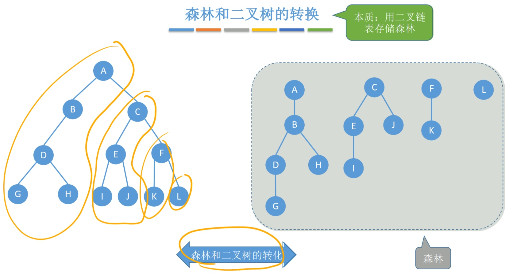
30. 树和森林的遍历¶
树的遍历¶
- 先根遍历
- 后根遍历
森林的遍历¶
-
先序遍历森林
- 访问森林中第一棵树的根节点
- 先序遍历第一棵树的根节点的子树森林
- 先序遍历除去第一棵树后剩余的树构成的森林
-
中序遍历森林（又称后根遍历）
- 中序遍历森林中第一课树的根节点的子树森林
- 访问第一课树的根结点
- 中序遍历除去第一棵树后剩余的树构成的森林
-
树和森林的遍历与二叉树遍历的对应关系
| 树 | 森林 | 二叉树 |
|---|---|---|
| 先根遍历 | 先序遍历 | 先序遍历 |
| 后根遍历 | 中序遍历 | 中序遍历 |
31. 二叉排序树的查找、插入、构造及删除¶
先查找到需要插入的位置，直接插入即可；
二叉排序树的剔除¶
- 若被删除结点
z是叶子结点，则直接删除 - 若结点
z只有一棵左子树或右子树，则让z的子树成为z父节点的子树，替代z的位置 - 若结点
z有左、右两棵子树，则令z的直接后继替代z，然后从二叉排序树中删去这个直接后继，这样就转换成了上面的两种情况
二叉排序树的查找效率分析¶
- \(O(log_2n)\)（平衡二叉树）~ \(O(n)\)(链表)
- \(ASL_a\): 平均查找长度，具体计算见查找部分
32. 平衡二叉树的插入、构建及查找¶
平衡二叉树的插入¶
- ①LL：在A的
左孩子的左子树中插入导致A的不平衡，将A的左孩子右上旋。
- ②RR：在A的
右孩子的右子树中插入导致A的不平衡，将A的右孩子左上旋。
- ③LR：在A的
左孩子的右子树中插入导致A的不平衡，将A的左孩子的右孩子，先左上旋再右上旋。
- ④RL：在A的
右孩子的左子树中插入导致A的不平衡，将A的右孩子的左孩子，先右上旋再左上旋。

平衡二叉树的查找¶
- 含有 n 个结点的平衡二叉树的最大深度为 \(O(log_2n)\), 平均查找长度为 \(O(log_2n)\)
- 平衡二叉树结点数的递推关系 \(n_h=1+n_{h-1}+n_{h-2},n_0=0,n_1=1,n_2=2\), \(n_h\)为构造此高度的平衡二叉树所需的最少结点数

33. 哈夫曼树和哈夫曼编码¶
- 带权路径长度： \(WPL=\sum_{i=1}^nw_il_i\)
- 含有
n个带权结点的二叉树中，带权路径长度WPL最小的二叉树称为哈夫曼树
哈夫曼树的构造¶
- 将 n 个结点分别作为
n棵仅含有一个结点的二叉树，构成森林F - 构造一个新结点，从
F中选取两棵根结点权值最小的树作为新结点的左、右子树，并且将新结点的权值置为左、右子树上根结点的权值之和 - 从
F中删除刚才选出的两棵树，同时将新得到的树加入F中 - 重复 2-3 步骤

特点¶
- 每个初始节点最终都成为叶结点
- 构造过程中新建了
n-1个结点，哈夫曼树中结点总数为2n-1 - 不存在度为
1的节点
哈夫曼编码¶
- 固定长度编码：对每个字符用相等长度的二进制位表示
- 可变长度编码：允许对不同字符用不等长的二进制位表示
- 前缀编码：没有一个编码是另一个编码的前缀
- 使用哈夫曼树得到哈夫曼编码：默认为左边为 0，右边为 1（不唯一，没明确规定）
34. 图的存储及存储方式间的相互转换¶
邻接矩阵法¶
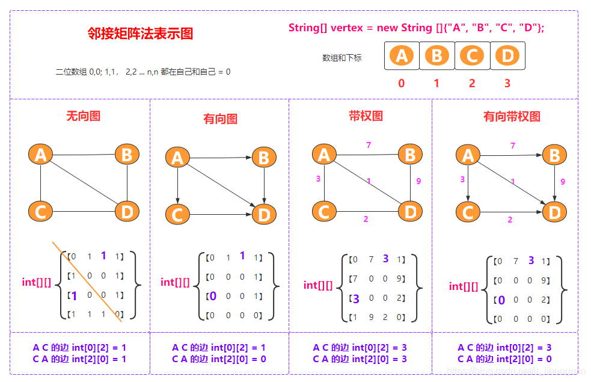
- 一个一维数组存储图中顶点的信息
- 一个二维数组存储图中边的信息，称为邻接矩阵
- 设图 \(G\)的邻接矩阵为 \(A\), \(A^n\) 的元素等于从顶点 i 到 j 的长度为 n 的路径数目
邻接表法¶

- 顶点表结点
边表的头指针和顶点的数据信息采用顺序存储
| 顶点域 | 边表头指针 |
|---|---|
data |
firstarc |
- 边表结点
对每个顶点 \(v_i\)建立一个单链表，第 \(i\)个单链表中的结点表示依附于顶点 \(v_i\)的边，这个单链表为顶点 \(v_i\)的边表
| 邻接点域 | 指针域 |
|---|---|
adjvex |
nextarc |
- 若存储的是无向图, 空间复杂度为 \(O(|V|+2|E|)\)；若为有向图，空间复杂度为 \(O(|V|+|E|)\)
十字链表¶
- 有向图的一种链式存储结构
- 对应于有向图中的每条弧有一个结点，对应于每个顶点也有一个结点


邻接多重表¶
 * 无向图的链式存储结构
* 与邻接表的区别是，同一条边在邻接多重表中只有一个结点
* 无向图的链式存储结构
* 与邻接表的区别是，同一条边在邻接多重表中只有一个结点
35. 图的广度优先算法及深度优先搜索¶
广度优先搜索¶
- 基本思想
首先访问起始顶点 \(v\), 接着由 \(v\)出发，依次访问 \(v\) 的各个未访问过的邻接顶点 \(w_1,w_2,...,w_i\), 然后一次访问\(w_1,w_2,...,w_i\) 的所有未被访问的邻接顶点。
换句话说，BFS是以v为起始点，由近及远依次访问和v有路径相通且路径长度为 1,2,… 的顶点

bool visited[MAX_VERTEX_NUM];//访问标记数组
void BFSTraverse(Graph G){ //对图G进行广度优先遍历
for(i=0;i<G.vexnum;i++)
visited[i] = FALSE;
InitQueue(Q);
for(i=0;i<G.vexnum;++i)
if(!visited[i]) //对每个连通分量调用一次BFS
BFS(G,i);
}
void BFS(Graph G,int v){//从顶点v出发，广度优先遍历图G
visit(v);
visited[v] = TRUE;
EnQueue(Q,v);
while(!isEmpty(Q)){
DeQueue(Q,v);
for(w=FirstNeighbor(G,v);w>=0;w=Neighbor(G,v,w))
if(!visited[w]){
visit(w);
visited[w] = TRUE;
EnQueue(Q,w);
}
}
}
深度优先搜索¶
- 基本思想
首先访问图中某一起始顶点 \(v\), 然后由 \(v\)出发，访问与 \(v\) 邻接且未被访问的任一顶点 \(w_1\), 再访问与 \(w_1\)邻接且未被访问的任一顶点，重复上述过程
bool visited[MAX_VERTEX_NUM];
void DFSTraverse(Graph G){
for(v=0;v<G.vexnum;++v)
visited[v] = FALSE;
for(v=0;v<G.vexnum;++v)
if(!visited[v])
DFS(G,v);
}
void DFS(Graph G,int v){
visit(v);
visited[v] = TRUE;
for(w=FirstNeighbor(G,v);w>=0;w=NextNeighbor(G,v,w))
if(!visited[w]){
DFS(G,w);
}
}
性能¶
| 性能 | 广度优先搜索 | 深度优先搜索 |
|---|---|---|
| 空间复杂度 | \(O(\|V\|)\) | \(O(\|V\|)\) |
| 时间复杂度-邻接矩阵 | \(O(\|V\|^2)\) | \(O(\|V\|^2)\) |
| 时间复杂度-邻接表 | \(O(\|V\| + \|E\|)\) | \(O(\|V\| + \|E\|)\) |
| 生成树 | 生成树，邻接表不唯一，邻接矩阵唯一 |
36. 最小生成树¶
求一个带权连通图的最小生成树Minimum-Spanning-Tree,MST
Prim 算法¶
- 基本思想

-
初始时从图中任取一顶点加入树 T, 此时树中只含有一个顶点
-
之后选择一个与当前 T 中顶点集合距离最近的顶点，且加入后不能出现环，并将该顶点和相应的边加入 T，每次操作后 T 中的顶点数和边数都增 1。
-
重复直到加满
-
时间复杂度： \(O(|V|^2)\)
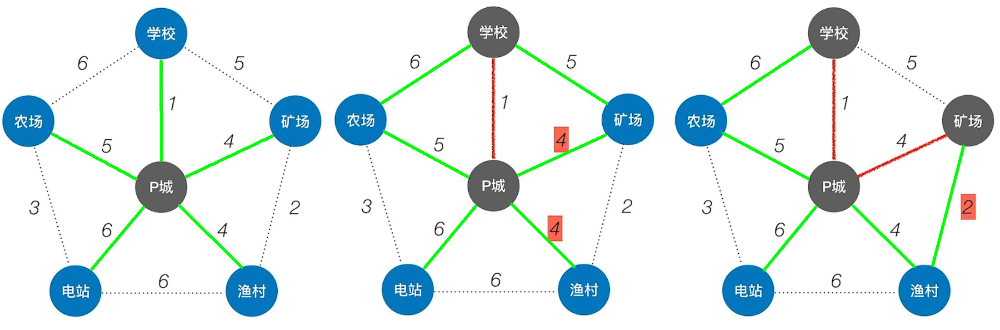
最终可能的结果：

Kruskal 算法¶
基本思想
- 初始时为只有 n 个顶点而无边的非连通图 T，每个顶点自成一个连通分量
- 按照边的权值由小到大，加入到非连通图 T 中，不能形成环
- 重复直到加满
- 时间复杂度： \(O(|E|log|E|)\)，每轮判断是否属于同一个集合，需要 \(O(log|E|)\)

Prim算法时间复杂度：\(O(|V|^2)\) 适合用于边稠密图
Kruskal算法时间复杂度： \(O(|E|log|E|)\) 适合用于边稀疏图
37. 最短路径¶
Dijkstra 算法求单源最短路径¶
辅助数组¶
- 集合
S：记录以求得的最短路径的顶点 dist[]：记录从源点 \(v_0\)到其他各顶点当前的最短路径长度path[]：path[i]表示从源点到顶点 i 之间的最短路径的前驱结点。可用于回溯找最短路径
算法步骤¶
-
初始化：集合
S初始化为{0},dist[]的初始值dist[i]=arcs[0][i] -
从顶点集合
V-S中选出 \(v_j\), 满足 \(dist[j]=Min\{dist[i] \ |v_i \in V-S\}\), 令\(S=S\cup\{j\}\) -
根据公式修改从 \(v_0\)出发到集合 V-S 上任一顶点 \(v_k\) 可达的最短路径长度,若
dist[j]+arcs[j][k]<dist[k], 则更新 -
重复步骤 2-3 操作共
n-1次 -
时间复杂度： \(O(|V|^2)\)
- 注意:Dijkstra 算法不适用于有负权值的带权图
案例：¶
-
初始：从\(V_i\)开始，初始化三个数组信息如下

-
第 1 轮：循环遍历所有结点，找到还没确定最短路径，且 dist 最小的顶点\(V_i\)，令 final[i] = ture
 检查所有邻接自\(V_i\)的顶点，若其 final 值为 false，则更新 dist 和 path 信息
检查所有邻接自\(V_i\)的顶点，若其 final 值为 false，则更新 dist 和 path 信息

-
第 2 轮：循环遍历所有结点，找到还没确定最短路径，且 dist 最小的顶点\(V_i\)，令 final[i] = ture
 检查所有邻接自\(V_i\)的顶点，若其 final 值为 false，则更新 dist 和 path 信息
检查所有邻接自\(V_i\)的顶点，若其 final 值为 false，则更新 dist 和 path 信息

-
第 3 轮：循环遍历所有结点，找到还没确定最短路径，且 dist 最小的顶点\(V_i\)，令 final[i] = ture 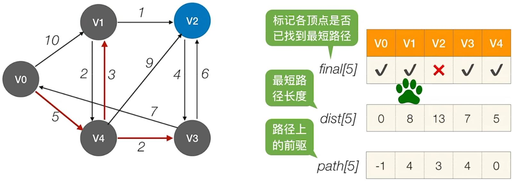 检查所有邻接自\(V_i\)的顶点，若其 final 值为 false，则更新 dist 和 path 信息

-
第 4 轮：循环遍历所有结点，找到还没确定最短路径，且 dist 最小的顶点\(V_i\) ，令 final[i] = ture
 因为找不到其他顶点了，也不用更新了，算法结束
因为找不到其他顶点了，也不用更新了，算法结束 -
结果:
- \(V_0\)到\(v_2\)的最短（带权）路径长度为：dist[2] = 9
- 通过 path[] 可知，\(V_0\)到 \(V_2\)的最短（带权）路径： \(V_2\) <- \(V_4\) <- \(V_1\) <- \(V_0\)
Floyd 算法求个定点之间最短路径¶
算法描述
-
定义一个 n 阶方阵 \(A^{(-1)}，A^{(0)}，...,A^{(n-1)}\), 其中 \(A^{(-1)}[i][j]=arcs[i][j],\)
-
根据递推公式重复
n次，计算出 \(A^{(0)}，...,A^{(n-1)}\) -
\(A^{(k)}[i][j]=Min\{A^{(k-1)}[i][j],A^{(k-1)}[i][k]+A^{(k-1)}[k][j]\},k=0,1,..,n-1\) 其中，
- \(A^{(0)}[i][j]\)是从顶点 \(v_i\) 到 \(v_j\)、中间路径是 \(v_0\)的最短路径的长度
- \(A^{(k)}[i][j]\) 是从顶点 \(v_i\)到 \(v_j\)、中间顶点的序号不大于 k 的最短路径的长度
-
时间复杂度 \(O(|V|^3)\)
案例：
-
初始：不允许在其他顶点中转，最短路径如下，path = -1 表示没有中转点

-
第一步：允许在\(V_0\)中转，最短路径是\(A^{(0)}\)，在\(path^{(0)}\)中记录中转的点\(V_2\)到\(V_1\)之间没有直接通路，但是能经过\(V_0\)中转的话， \(V_2\)到\(V_1\)之间的距离从 ∞ 变为 11,公式化是，
 其中上述\(V_0\)在中转后从无穷大变为 11 的路径被找到了：
\(A^{(-1)}[2][1] \gt A^{(-1)}[2][0] + A^{(-1)}[0][1]=11\),修改矩阵的值为 \(A^{(0)}[2][1]=11,path^{(0)}[2][1]=0\)：
其中上述\(V_0\)在中转后从无穷大变为 11 的路径被找到了：
\(A^{(-1)}[2][1] \gt A^{(-1)}[2][0] + A^{(-1)}[0][1]=11\),修改矩阵的值为 \(A^{(0)}[2][1]=11,path^{(0)}[2][1]=0\)：

-
第二步：允许在 \(V_0\)、\(V_1\) 中转，求\(A^{(1)}\)和 \(path^{(1)}\), 继续根据公式
 找到了：
找到了：


-
第三步：允许在 \(V_0\)、\(V_1\) 、\(V_2\) 中转，求\(A^{(2)}\)和 \(path^{(2)}\) ,找到了 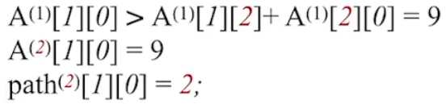 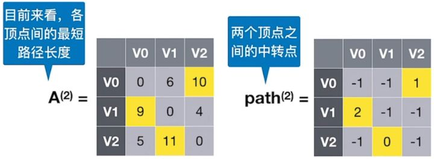
-
根据 可知，\(V_1\) 到 \(V_2\) 最短路径长度为 4，根据 可知，完整路径信息为 \(V_1-V_2\)
-
根据 可知，\(V_0\) 到 \(V_2\) 最短路径长度为 10，根据 可知，完整路径信息为 \(V_0-V_1-V_2\)
-
根据 可知，\(V_1\) 到 \(V_0\) 最短路径长度为 9，根据 可知，完整路径信息为 \(V_1-V_2-V_0\)
38. 拓扑排序¶
AOV网
若用AVG表示一个工程，其顶点表示活动，用有向边 \(<V_i,V_j>\) 表示活动 \(V_i\) 必须先于活动 \(V_j\) 进行的这样一种关系，则将这种有向图称为顶点表示活动的网络
-
拓扑排序：在图论中，由一个有向无环图的顶点组成的序列，当且仅当满足下列条件时，称为该图的一个拓扑排序
- 每个顶点出现且只出现一次
- 若顶点
A在序列中排在顶点 B 的前面，则在图中不存在从顶点 B 到顶点 A 的路径
-
拓扑排序算法
- 从
AOV网中选择一个没有前驱的顶点并输出 - 从网中删除该顶点和所有以它为起点的有向边
- 重复 1-2，直到当前
AOV网为空
- 从
-
时间复杂度 \(O(|V|+|E|)\),采用邻接矩阵时间复杂度 \(O(|V|^2)\)
-
逆拓扑排序
- 从
AOV网中选择一个没有后继的顶点并输出 - 从网中删除该顶点和所有以它为重点的有向边
- 重复 1-2 直到
AOV为空
- 从
-
案例： 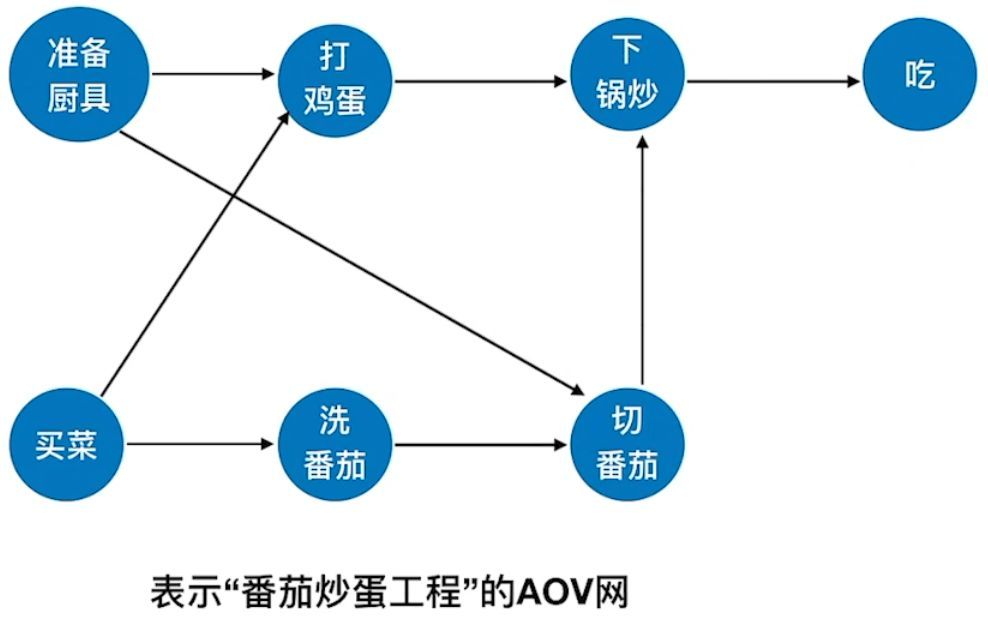

39. 关键路径¶
在带权有向图中，以顶点表示事件，以有向边表示活动，以边上的权值表示完成该活动的开销，称之为用边表示活动的网络，简称AOE网

-
AOE网中仅有一个入度为 0 的顶点，称为开始顶点（源点）；只存在一个出度为 0 的顶点，称之为结束顶点（汇点） -
具有最大路径长度的路径称为关键路径，而把关键路径上的活动称为关键活动
-
关键路径并不唯一，只提高其中一条关键路径上的关键活动速度不能缩短整个工程的工期。
重要概念：
- 事件\(v_i\)的最迟发生时间 \(v(k)\):它是指在不推迟整个工程完成的前提下，该事件最迟必须发生的时间（紫色标注）
- 活动 \(a_i\) 的最迟开始时间 \(l(i)\)：它是指该活动弧的终点所表示事件的最迟发生时间与该活动所需时间之差（绿色标注）
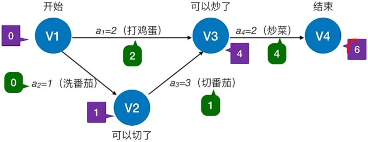
- 活动 \(a_i\) 的最早开始时间 \(e(i)\)：指该活动弧的起点所表示的事件的最早发生时间（红色标注）
- 活动 ai 的时间余量 \(d(i) = l(i) - e(i)\)，表示在不增加完成整个工程所需总时间的情况下，活动 ai 可以拖延的时间
- 若\(d(i) = 0\) 即 \(l(i) = e(i)\) 的活动 \(a_i\) 是关键活动
- 由关键活动组成的路径就是关键路径

计算步骤¶
-
事件 \(v_k\)的最早发生时间 \(ve(k)\)
- \(ve(源点)=0\)
- \(ve(k)=Max\{ve(j)+Weight(v_j,v_k\}\)
-
事件 \(v_k\) 的最迟发生时间 \(vl(k)\)
- \(vl(汇点)=ve(汇点)\)
- \(vl(k)=Min\{vl(j)-Weight(v_k,v_j\}\)
-
活动 \(a_i\) 的最早开始时间 \(e(i)\)
- 它是指该活动弧的起点所表示的事件最早发生时间。
- 若边 \(<v_k,v_j>\)表示活动 \(a_i\), 则有 \(e(i)=ve(k)\)
-
活动 \(a_i\)的最迟开始时间 \(l(i)\)
- 它是指该活动弧的终点所表示事件的最迟发生时间与该活动所需时间之差
- 若边 \(<v_k,v_j>\) 表示活动 \(a_i\) , 则有\(l(i)=vl(j)-Weight(v_k,v_j)\)
-
求所有活动的时间余量 \(d(i)=l(i)-e(i)\), \(d(i)=0\)的活动 \(a_i\)是关键活动
案例：
-
求所有事件的最早发生时间 \(ve\)
- (1) 计算拓扑排序序列:
 \(V_1、V_3、V_2、V_5、V_4、V_6\)
\(V_1、V_3、V_2、V_5、V_4、V_6\) - (2) 按照序列计算最早发生时间
- \(ve(1) = 0\)
- \(ve(3) = 2\)
- \(ve(2) = 3\)
- \(ve(5) = 6\)
- \(ve(4) = Max\{ve(2) + 2, ve(3) + 4\}= 6\)
- \(ve(6) = Max\{ve(5) + 1, ve(4) + 2, v(3) + 3\} = 8\)
- (1) 计算拓扑排序序列:
-
求所有事件的最迟发生时间 \(vl\)
- (1) 计算逆拓扑排序序列：\(V_6、V_5、V_4、V_2、V_3、V_1\)
- (2) 按照序列计算最迟发生时间
- \(vl(6) = ve(6) = 8\)
- \(vl(5) = vl(6) - 1 = 7\)
- \(vl(4) = vl(6) - 2 = 6\)
- \(vl(2) = Min\{vl(5) - 1, vl(4) - 2\} = 4\)
- \(vl(3) = Min\{vl(4) - 4, vl(6) - 3\} = 2\)
- \(vl(1) = Min\{vl(2) - 3, vl(3) - 2\} = 0\)
-
求所有活动的最早发生时间 \(e\)
 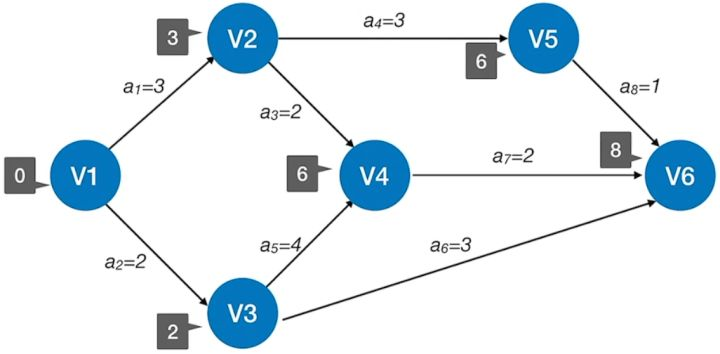
所有活动的最早发生时间, 若边 \(<v_k,v_j>\)表示活动 \(a_i\), 则有 \(e(i)=ve(k)\)
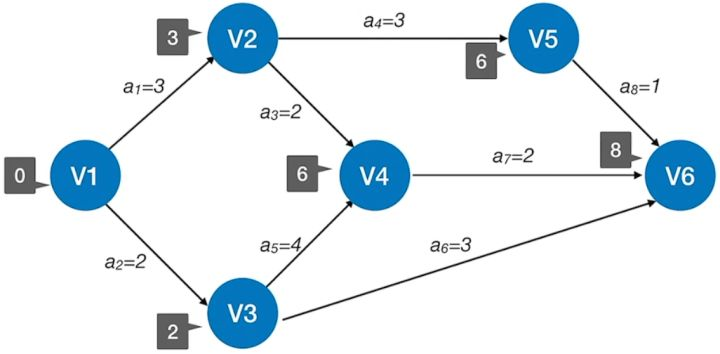
所有活动的最早发生时间, 若边 \(<v_k,v_j>\)表示活动 \(a_i\), 则有 \(e(i)=ve(k)\)

-
求所有活动的最迟发生时间 \(l\)
- 边 \(<v_k,v_j>\) 表示活动 \(a_i\) , 则有\(l(i)=vl(j)-Weight(v_k,v_j)\)
- 得到以下结果：

-
求所有活动的时间余量:\(d(i) = l(i) - e(i)\), 得到：

- 关键活动：\(a_2、a_5、a_7\)
- 关键路径：\(V_1 -> V_3 -> V_4 -> V_6\)
39. 折半查找¶
- 基本思想
首先将给定的key与表的中间位置的关键字比较，成功后返回；否则根据key与关键字的大小判断查找左边还是右边
折半查找整个算法中，关于 mid 的取值向上 / 向下需要统一
int Binary_Search(SeqList L,ElemType key){
int low=0,high=L.TableLen-1,mid;
while(low<=high){
mid = (low+high)/2; //取中间位置
if(L.elem[mid]==key)
return mid;
else if(L.elem[mid]>key)
high = mid-1;//从前半部分继续查找
else
low = mid+1;//从后半部分继续查找
}
return -1; //查找失败，返回-1
}
- 折半查找又称二分查找，仅适用于有序的顺序表
-
仅适用于顺序存储结构，不适用于链式存储结构
-
生成判定树
判定树特性：
- 是平衡二叉树
- 有 \(n\) 个圆形结点代表原数据或成功结点，\(n+1\) 个方框结点代表不成功结点
- 每个圆形结点都不是叶子结点，一定有方框子结点
- 元素个数为\(n\)时，树高度为 \(h=\lceil \log_2{(n+1)} \rceil\)
与折半查找判定树的高度h有关。高度越小，查找效率越高
- 最好情况，平均查找长度=\(O(1)\)
- 最坏情况，平均查找长度=\(O(log_2n)\)
- 则时间复杂度=\(O(log_2n)\)
40. 分块查找¶
分块查找，又叫索引顺序查找。
算法思想：用一个索引表给数据归类。
算法过程：
- ①在索引表中确定待查记录所属的分块（可顺序、可折半）
- ②在块内顺序查找
用折半查找索引表：¶
若索引表中不包含目标关键字，则折半查找索引表最终停在low>high，要在low所指分块中查找
查找效率分析¶
时间复杂度评价¶
| 查找算法 | \(ASL_{成功}\) | \(ASL_{失败}\) |
|---|---|---|
| 顺序查找-无序表 | \(\frac{n+1}{2}\) | \(n+1\) |
| 顺序查找-有序表 | \(\frac{n+1}{2}\) | \(\frac{n} {2} +\frac{n}{n+1}\) |
| 折半查找 | \(sum(圆形结点*对应层数)/n\) | \(sum(方结点∗对应层数−1)/(n+1)\) |
| 分块查找 | \(ASL=L_I+L_S\) | - |
41. B 树及其基本操作¶
B 树又称多路平衡查找树，B 树中所有结点的孩子个数的最大值称为 B 树的阶，通常用m表示。
B 树是所有结点的平衡因子都等于 0 的多路平衡查找树
定义¶
* 树中每个结点至多有 m 棵子树，即至多含有 m-1 个关键字 * 若根结点不是终端节点，则至少有两棵子树 * 除根结点外的所有非叶结点至少有 \(\lceil m/2 \rceil\)棵子树，即至少含有 \(\lceil m/2 \rceil-1\) 个关键字 * 所有非叶子结点的结构如下: \(n\) | \(P_0\) | \(K_1\) | \(P_1\) |\(K_2\) | \(P_2\) |\(...\) | \(K_n\) | \(P_n\) 其中， \(K_i\)为结点的关键字， \(P_i\)为指向子树根结点的指针，且: - 指针 \(P_{i-1}\) 所指子树中所有结点的关键字均小于 \(K_i\) - 指针\(P_i\)所指子树中所有结点的关键字均大于 \(K_i\) - 结点的孩子个数等于该节点中关键字个数加 1
- 所有的叶节点都出现在同一层次上，并且不带信息，称为外部结点
B 树的高度¶
B 树的高度不包括最后的外部结点那一层
\(\log_m(n+1) \leq h \leq \log_{\lceil m/2\rceil}((n+1)/2)+1\)
B 树的查找¶
- 在 B 树中找结点，在磁盘中进行
- 在结点在找关键字，在内存中进行
B 树的插入¶
- 定位：利用 B 树的查找算法，找出插入该关键字的最低层中的某个非叶结点
- 插入：在 B 树中，每个失败结点的关键字个数都在区间 \([\ \lceil m/\rceil-1.m-1]\) 内。插入后的结点关键字个数小于 m，可以直接插入。如果插入后关键字个数大于
m-1, 必须进行分裂 - 分裂方法是
- 取一个新结点，在插入 key 后的原结点，从中间位置将其中的关键字分为两部分
- 左部分包含的关键字放在原结点中，右部分包含的关键字放到新结点中
- 中间位置 1 的节点插入原节点的父节点。
- 若此时导致父节点也超过了上限，则对父节点继续分裂
B 树的删除¶
-
当被删关键字
k不在终端结点时，可以用 k 的前驱或后继k'替代k, 然后在相应的结点中删除k'。关键字k'必定落在某个终端节点中，则转换成了被删关键字在终端结点中的情形 -
当被删关键字
k在终端结点中时-
直接删除关键字：若被删除关键字所在结点的关键字个数 > \(\lceil m/2 \rceil\), 表明删除该关键字后仍满足 B 树的定义，则直接是删除该关键字
-
兄弟够借：若被删除关键字所在结点的关键字个数 = \(\lceil m/2 \rceil-1\), 且与此节点相邻的右（左）兄弟节点的关键字个数 \(\geq \lceil m/2 \rceil\), 则需要调整该节点、右（左）兄弟结点及其双亲结点（父子换位法），以达到新的平衡
- 兄弟不够借：若被删除关键字所在结点的关键字个数 = \(\lceil m/2 \rceil-1\), 且与此节点相邻的右（左）兄弟节点的关键字个数均 \(\lceil m/2 \rceil-1\), 则将关键字删除后与左（或右）兄弟结点及双亲结点中的关键字进行合并。 在合并过程中，双亲结点中的关键字个数会减 1。若其双亲结点是根结点且关键字个数减少至 0，则直接将根结点删除，合并后的新结点成为根；若其双亲结点不是根结点，且关键字减少超过下限，在继续合并操作。
-
B树的构造及操作案例


42. 散列表¶
基本概念¶
- 散列函数：一个把查找表中关键字映射成该关键字对应的地址的函数，记为
Hash(key)=Addr - 冲突：散列函数把两个或两个以上的不同关键字映射到同一地址的现象
- 同义词：引起冲突的关键字
- 散列表：根据关键字而直接进行访问的数据结构。散列表建立了关键字和存储地址之间的一种直接映射关系
散列函数的构造方法¶
散列函数的要求¶
- 定义域包含全部关键字，值域依赖于散列表的大小或地址范围
- 散列函数计算出的地址应该能等概率、均匀的分布在整个地址空间中，减少冲突发生
- 尽可能简单，能够快速计算出散列地址
| 常见构造函数 | 公式 | 评价 |
|---|---|---|
| 直接定地法 | \(H(key)=key\) 或H \(H(key)=a \times key+b\) | 最简单，不会产生冲突。适合关键字的分布基本连续的情况 |
| 除留余数法 | \(H(key)=key\%p\)，\(p\) 为不大于散列表表长\(m\)但最接近或等于\(m\)的质数 | |
| 数字分析法 | 设关键字是r进制数，选取数码分布比较均匀的若干位作为散列地址 | 适合于一致的关键字集合，若更换了关键字，则需要重新构造新的散列函数 |
| 平方取中法 | 取关键字对的平方值的中间几位作为散列值 | 适用于关键字的每位取值都不均匀或均小于散列地址所需的位数 |
处理冲突的方法¶
- 开放定址法， \(H_i=(H(key)+d_i)\%m\), \(m\) 表示散列表表长，\(d_i\)为增量序列
| 开放定址法 | \(d_i\) | 补充说明 |
|---|---|---|
| 线性探测法 | \(0,1,2,...,m-1\) | 可能出现大量元素在相邻地址上聚集，降低查找效率 |
| 平方探测法 | \(0^2,1^2,-1^2,2^2,-2^2,...,k^2,-k^2\) | 散列表长度m必须是一个可以表示成4k+3的素数 |
| 再散列法 | \(i*Hash_2(key)\) | i是冲突的次数 |
| 伪随机序列法 | \(d_i==随机序列\) |
- 拉链法
把所有的同义词存储在一个线性链表中，这个线性链表由其散列地址唯一标识
散列查找及性能分析¶
查找过程¶
- 初始化
Addr=Hash(key) - 检测查找表中地址为
Addr的位置上是否有记录，若无记录，返回查找失败；若有记录。比较它与 key 的值，若相等，则返回查找成功的标志，否则执行步骤 3 - 用给定的处理冲突方法计算 “下一个散列地址”，并将
Addr置为此地址，转入步骤 2
散列表的查找效率取决于散列函数、处理冲突的方法和装填因子
-
装填因子\(\alpha\)定义为一个表的装满程度
\(\alpha = \frac{表中记录数 n}{散列表长度 m}\) -
线性探测
- 链地址法
43. 直接插入排序¶
要将L(i)插入已有序的子序列L[1...i-1]，需要执行以下操作
-
查找出
L(i)在L[1...i-1]中的插入位置k -
将
L[k...i-1]中的所有元素依次后移一个位置 -
将
L(i)复制到L(k)
void InsertSort(ElemType A[],int n){
int i,j;
for(i=2;i<=n;i++) //依次将A[2]...A[n]插入到前面已排序的序列
if(A[i]<A[i-1]){ //若A[i]小于前驱，则将其插入前面的有序表
A[0] = A[i]; //哨兵
for(j=i-1;A[0]<A[j];--j) //从i-1开始比较，比较一次，向后移动一次
A[j+1] = A[j];
A[j+1] = A[0]; //找到插入位置，赋值
}
}
44. 折半插入排序¶
- 查找有序子表时用折半查找来实现
- 确定待插入位置后，同意以地向后移动元素
void InsertSort(ElemType A[],int n){
int i,j,low,high,mid;
for(i=2;i<=n;i++){ //依次将A[2]...A[n]插入到前面已排序的序列
A[0] = A[i]; //暂存单元，不是哨兵
low = 1;high = i-1;
while(low<=high){ //折半查找
mid = (low+high)/2;
if(A[min]>A[0]) high = mid-1;
else low = mid+1;
}
for(j=i-1;j>=high+1;--j) //统一后移元素
A[j+1] = A[j];
A[high+1] = A[0]; //赋值
}
}
45. 希尔排序¶
基本思想：先将待排序表分割成若干形如L[i,i+d,i+2d,...,i+kd]的特殊子表，即把相隔某个 “增量” 的记录组成一个子表，对每个子表分别进行直接插入排序，当整个表中的元素已呈 “毕本有序” 时，再对全体记录进行一次直接插入排序
过程
- 先取一个小于 n 的步长 \(d_1\), 把表中的全部记录分成 \(d_1\)组，所有距离为 \(d_1\)的倍数的记录放在同一组，在各组内进行直接插入排序
- 然后取第二个步长 \(d_2<d_1\).
- 重复上述过程，直到所取到的 \(d_t=1\)，即所有记录已放在同一组，再进行直接插入排序
增量序列： \(d_1=n/2,d_{i+1}=\lfloor d_i/2 \rfloor\), 最后一个增量等于 1

void ShellSort(ElemType A[],int n){
//A[0]只是暂存单元，不是哨兵
for(dk=n/2;dk>=1;dk=dk/2) //步长变换
for(i=dk+1;i<=n;i++) //对d_i个组进行直接插入排序
if(A[i]<A[i-dk]){ //需要将A[i]插入所在的有序子表中
A[0] = A[i]; //暂存A[i]
for(j=i-dk;j>0&&A[0]<A[j];j-=dk)//寻找插入位置
A[j+dk] = A[j]; //记录后移
A[j+dk] = A[0]; //插入
}
}
46. 交换排序¶
7.3.1 冒泡排序¶
基本思想：从后往前（或从前往后）两两比较相邻元素的值，若为逆序则交换，指导序列比较完。

void BubbleSort(ElemType A[],int n){
for(i=0;i<n-1;i++){
flag = false; //表示本趟冒泡是否发生交换的标志
for(j=n-1;j>i;j--) //一趟冒泡过程
if(A[j-1]>A[j]){ //若为逆序
swap(A[j-1],A[j]); //交换
flag = true;
}
if(flag==false)
return; //本趟遍历后没有发生交换，说明表已经有序
}
}
注意：冒泡排序所产生的有序子序列是全局有序的。每一趟排序都会将一个元素放置到其最终的位置上
46. 快速排序¶
基本思想：在待排序表L[1...n]中任取一个元素pivot作为枢轴, 通过一趟排序将待排序表划分为独立的两个部分L[1...k-1]和L[k+1...n], 使得L[1...k-1]中的所有元素小于pivot,L[k+1...n]中的所有元素大于等于pivot, 则pivot放在了其最终位置L(k)上，这个过程称为一趟快速排序。然后分别对左右两部分重复上述过程，直到每个部分只有一个元素。

void QuickSort(ElemType A[],int low,int high){
if(low<high){
//Partition()就是划分操作，将表划分成满足条件的两个子表
int pivotpos=Partition(A,low,high); //划分
QuickSort(A,low,pivotpos-1);
QuickSort(A,pivots+1,high);
}
}
int Partition(ElemType A[],int low,int high){ //一趟划分
ElemType pivot=A[low];
while(low<high){
while(low<high&&A[high]>=pivot) --high;
A[low] = A[high]; //将比枢轴小的元素移动到左边
while(low<high&&A[low]<=pivot) ++low;
A[high] = A[low]; //将比枢轴大的元素移动到右边
}
A[low] = pivot; //枢轴放到最终位置
reutrn low;
}
快速排序是所有内部排序算法中平均性能最优的排序算法
47. 简单选择排序¶
基本思想：假设排序表为L[1...n], 第i趟排序即从L[i...n]中选择关键字最小的元素与L(i)交换，每一趟排序可以确定一个元素的最终位置，经过 n-1 趟排序可以使整个排序表有序
void SelectSort(ElemType A[],int n){
for(i=0;i<n-1;i++){ //一共进行n-1趟
min = i; //记录最小元素位置
for(j=i+1;j<n;j++) //在A[1...n-1]中选择最小的元素
if(A[j]<A[min]) min = j; //更新最小的元素
if(min!=j) swap(A[i],A[min]); //封装的swap()函数共移动3次
}
}
48. 堆排序¶
-
大根堆：
L(i)>=L(2i) & L(i)>=L(2i+1), 最大元素在根结点 -
小根堆：
L(i)<=L(2i) & L(i)<=L(2i+1), 最小元素在根结点 -
堆的插入：把新结点放到堆的末端，后进行向上调整
-
构造初始堆：
- n 个结点的完全二叉树，最后一个结点是第 \(\lfloor n/2 \rfloor\)个结点的孩子。对第\(\lfloor n/2 \rfloor\)个结点为根的子树筛选（对于的大根堆，若根结点的关键字小于左右孩子中关键字较大者，则交换），使该子树成为堆。
- 之后向前依次对各节点\(\lfloor n/2 \rfloor-1 \sim 1\) 为根的子树进行筛选，看该结点值是否大于其左右子节点的值，不大于的话进行交换
- 交换后可能会破坏下一级的堆，使用上述办法继续构造下一级的堆，直到以根结点形成堆为止
-
输出堆顶元素，重新构建堆，重复这一过程

void BuildMaxHead(ElemType A[],int len){
for(int i=len/2;i>0;i--) //从i=n/2开始，反复调整堆
HeadAdjust(A,i,len);
}
void HeadAdjust(ElemType A[],int k,int len){
//将元素k为根的子树进行调整
A[0] = A[k]; //A[0]暂存子树的根节点
for(i=2*k;i<=len;i*2){ //沿key较大的子节点向下筛选
if(i<len&&A[i]<A[i+1])i++; //取i为较大子结点
if(A[0]>=A[i])break; //筛选结束
else{
A[k]=A[i]; //将A[i]调整到双亲结点上
k=i; //修改k值，继续向下筛选
}
}
A[k] = A[0]; //被筛选结点的值放入最终位置
}
void HeapSort(ElemType A[],int len){
BuildMAxHeap(A,len);
for(i=len;i>1;i--){ //n-1趟的交换和建堆过程
Swap(A[i],A[1]); //输出堆顶元素，和堆底元素交换
HeadAdjust(A,1,i-1);//调整，把剩余的i-1个元素整理成堆
}
}
49. 归并排序¶
假定待排序表含有 n 个记录，则可将其视为 n 个有序的子表，每个子表的长度为 1，然后两两合并，得到 \(\lceil n/2 \rceil\)个长度为 2 或 1 的有序表，继续两两合并。这种排序方法称为 2 路归并排序。
一趟归并排序的操作是，调用 \(\lceil n/2h \rceil\) 次算法merge(), 将L[1...n]中前后相邻且长度为 h 的有序段进行两两归并，得到前后相邻、长度为 2h 的有序段进行两两归并，得到前后相邻、长度为 2h 的有序段，整个归并排序需要进行 \(\lceil log_2n\rceil\)趟

ELemType *B=(ElemType *)malloc((n+1)*sizeof(ElemType)); //辅助数组B
void Merge(ElemType A[],int low,int mid,int high){
for(int k=low;k<=high;k++)B[k] = A[k]; //将A中元素放到B中
for(i=low,j=mid+1,k=i;i<=mid&&j<=high;k++){
if(B[i]<=B[j])A[k] = B[i++]; //将较小值赋值到A中
else A[k] = B[j++];
}
while(i<=mid) A[k++] = B[i++]; //若一个表未检测完，赋值
while(j<=high) A[k++] = B[j++]; //若第二个表未检测完，赋值
}
void MergeSort(ElemType A[],int low,int high){
if(low<high){
int mid = (low+high)/2;
MergeSort(A,low,mid);
MergeSort(A,mid+1,high);
Merge(A,low,mid,high); //归并
}
}
50. 基数排序¶
- 最高位优先法
MSD: 将关键字位权重递减一次逐层划分成若干更小的子序列，最后将所有子序列依次连接成一个有序序列 - 最低位优先法
LSD：将关键字权重递增一次进行排序，最后形成一个有序序列
排序过程：
-
在排序中，使用 r 个队列 \(Q_0,Q_1,...,Q_{r-1}\)
-
对 \(i=0,1,...,d-1\)，依次做一次分配和收集，每个关键字结点 \(a_j\)由 d 元组组成
-
分配：开始时，把 \(Q_0,Q_1,...,Q_{r-1}\)各个队列置成空队列，然后依次考察线性表中的每个结点 \(a_j\), 若 \(a_j\) 的关键字 \(k_j^i=k\)，就把 \(a_j\) 放进 \(Q_k\) 队列中
-
收集：把 \(Q_0,Q_1,...,Q_{r-1}\)各个队列中的结点依次首尾相连，得到新的结点序列，从而组成新的线性表

51. 各种内部排序算法比较及应用¶
内部排序算法的比较¶
| 算法种类 | 时间复杂度-最好 | 时间复杂度-平均 | 时间复杂度-最坏 | 空间复杂度 | 是否稳定 |
|---|---|---|---|---|---|
| 直接插入排序 | \(O(n)\) | \(O(n^2)\) | \(O(n^2)\) | \(O(1)\) | 是 |
| 冒泡排序 | \(O(n)\) | \(O(n^2)\) | \(O(n^2)\) | \(O(1)\) | 是 |
| 简单选择排序 | \(O(n^2)\) | \(O(n^2)\) | \(O(n^2)\) | \(O(1)\) | 否 |
| 希尔排序 | \(O(1)\) | 否 | |||
| 快速排序 | \(O(n\log_2n)\) | \(O(n\log_2n)\) | \(O(n^2)\) | \(O(\log_2n)\) | 否 |
| 堆排序 | \(O(n\log_2n)\) | \(O(n\log_2n)\) | \(O(n\log_2n)\) | \(O(1)\) | 否 |
| 2路归并排序 | \(O(n\log_2n)\) | \(O(n\log_2n)\) | \(O(n\log_2n)\) | \(O(n)\) | 是 |
| 基数排序 | \(O(d(n+r))\) | \(O(d(n+r))\) | \(O(d(n+r))\) | \(O(r)\) | 是 |
选取排序方法需要考虑的因素¶
- 待排序的元素数目 n：较小考虑直接插入和简单选择排序，较大考虑快排】堆排序、归并排序
- 元素本身信息量的大小：是否选取移动量较少的排序方法
- 关键字的结构及其分布情况：如已经有序，则选取直接插入或冒泡排序
- 稳定性的要求
- 语言工具的要求，存储结构及辅助空间的大小等
52. 外部排序的方法¶
- 根据内存缓冲区的大小，将外存上的文件分成若干长度为 \(l\) 的子文件，依次读入内存并利用内部排序方法对它们进行排序，并将排序后得到的有序子文件重新写回外存，称这些有序子文件称为归并段或顺串
- 对这些归并段进行逐趟归并，使归并段逐渐由小到大，直至得到整个有序文件为止
外部排序的总时间=内部排序所需时间+外存信息读写的时间+内部归并所需的时间- 在进行归并的时候，需要使用输入缓冲区和输出缓冲区，在内存和外存中传输数据
- 对
r个初始段归并，做k路平衡归并，归并树可用严格 k 叉树来表示，树的高度 = \(\lceil \log_kr\rceil\) = 归并趟数 S
多路平衡归并与败者树¶
-
做内部归并时，在 k 个元素中选择关键字最小的记录需要比较 k-1 次，S 趟归并总需的比较次数是 \(S(n-1)(k-1)=\lceil \log_kr\rceil(n-1)(k-1)=\lceil \log_2r \rceil (n-1)(k-1)\lceil \log_2k \rceil\)
-
引入败者树后，在 k 个元素中选择关键字最小的记录需要比较 \(\lceil \log_2k \rceil\) 次，内部归并的比较次数与 k 无关。因此只要内存允许，增大归并路数 k 将有效减少归并树的高度，提高外部排序的速度
-
败者树
- k 个叶结点分别存放 k 个归并段在归并过程中当前参加比较的记录
- 内存结点用来记忆左右子树中的失败者，而让胜者往上继续比较，一直到根结点
- 根结点记录胜者
- 叶结点进行编号 \(b0 \sim bk\), 内存结点编号 \(ls[0] \sim ls[k]\), \(ls[0]\) 为根结点

置换 - 选择排序（生成初始归并段）¶
初始待排文件FI, 初始归并段输出文件为FO, 内存工作区为WA,FO与WA的初始状态为空，WA可容纳 w w w 个记录
- 从
FI输入 w 个记录到工作区WA - 从
WA中选出其中关键字取最小值的记录，记为MINIMAX - 将
MINIMAX就输出到FO中去 - 若
FI不为空，则从 FI 输入下一个记录到WA中 - 从
WA中所有关键字比MINIMAX记录的关键字大的记录中选出最小关键字记录，作为新的MINIMAX - 重复
3-5，直至在WA中选不出新的MINIMAX记录为止，由此得到一个初始归并段，输出一个归并段的结束标志至FO中去 - 重复
2-6，直至WA为空，由此得到全部初始归并段

最佳归并树¶
把归并段的长度作为权值，进行严格 k 叉树的哈夫曼树思想，构造最佳归并树
- \((n_0-1)\%(k-1)=0\), 不需要添加
- \((n_0-1)\%(k-1)=u\neq0\), 需要添加 \(k-1-u\) 个长度为 0 的虚段